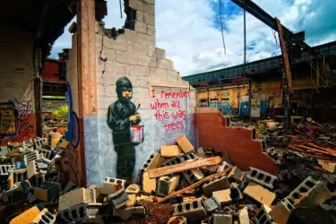
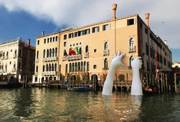

Climate Change: A solution?
A global issue
Global warming is one of the most important issues of our century. The situation is becoming more and more critical as the years go by and for the moment no real solution is possible. And this worries many people.
The most important thing for those who want to protect the planet is to understand that global warming is not this phenomenon in the first place and that it is not recent.
What exactly is it?
This refers to an increase in the average temperature of the planet, which is produced by some substances absorbing more solar radiation than others, thus changing the balance between incoming and outgoing heat energy on the Earth.
Climate change can be described as an increase in the frequency of heat waves, a lack of precipitation or an increase in the frequency of storms, for example.
A solution: Art
Our generation, that of the 2000s, is severely affected by global warming. While some people are already aware of the issue, many, whether they are young or simply people who have not had the opportunity to learn about the issue, are not sufficiently informed about climate change. By educating the next generations sufficiently, we can hope to find a real solution to this problem.
Art would be an excellent tool for this. Artistic culture is a good way to popularise the problems of our society, since art and artists have always had social-political messages to convey. Informing in a playful and creative way is a good way to get a message across, to make people feel something or to inform them.
Many artists today are fully committed to this cause that affects us all. We could mention several of them, such as Banksy or Lorenzo Quinn, the most famous and mediatised, actively militating in their works against global warming and also criticising a system that tends to ignore this issue.


Banksy, I Remember When All This Was Trees, 2010
Lorenzo Quinn, Support, 2017